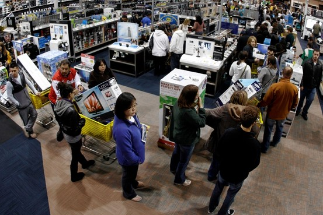

Assessment 1: My Profile
Project Idea-
Overview:
My idea for the project is a device and system that enables retail stores much faster sales and fewer cues during checkout. The system itself is built on a handheld device that store employees can carry around within the store, a customer seeking to simply pay for their item and leave may approach one these employees pay for their item and leave in a straightforward manner. Conversely while people are waiting in lines to reach normal checkouts an employee armed with this machine could make quick and easy transactions throughout the line without needing a full register to do so. In order to facilitate the fastest transactions only card payments would be accepted.
Motivation:
There is a study performed by professors Yina Lu and Marcelo Olivares of Columbia Business School and Andres Musalem of Duke Universitys Fuqua School of Business; that shows that most people do not factor in variables such as the number of clerks working on a line or the time it takes for each person to be served. The overall effecting factor to whether people will even begin to cue up is the number of people waiting in the line. An article by Perry Kuklin stated that the length of a customers time in a line dramatically impacts the customers experience as a whole, Kuklin states: 'no matter how great your location is or how reasonable your prices are, long checkout lines can be your doom, ultimately influencing sales.'
Some other factors that Kuklin found that were from the resulting fallout from long lines is that close to 50% of customers will purposely avoid that retailer/ brand again in the future if they waited longer than 5 minutes. This means that if the customer feels that their time waiting in the cue is not less than a few minutes there is a higher probability that they will leave the establishment without purchasing their item and the company risks permanently losing that customers loyalty.

Description:
Based on the findings of the studies performed by Perry Kuklin and professors Yina Lu and Marcelo Olivares most customers who wait too long risk leaving the store with a negative experience and are less likely to purchase items from that retailer in the future. With the introduction of this system retail employees can target and remove easier purchases from cues in order to facilitate a much more positive experience for a customer by simply not as many people within a stores line. This in turn gives rise to more customers feeling comfortable in performing purchases within the store as they feel that it will be a much swifter resolution to their purchase.
The system itself is very simple, it can integrate with a small handheld device employees can carry with them within the store. The system allows for quick and easy transactions by the employee simply scanning the item the customer wishes to purchase and then the customer issuing payment by card via eftpos which is inbuilt into the device itself. The idea behind the creation of this portable device being the employee approaches the customer on the shop floor before they even reach the counter thus removing a potential extra person waiting in the line.
The system will need to be assimilated with a retail stores Point Of Sale (POS) system in order to ensure that any items sold are properly deducted from the stores on hand inventory. Many retailers are now also utilising their websites to allow customers to make online purchases, it is therefore critical to ensure that the on hand device properly communicates with the stores POS system to ensure customers browsing a stores website are receiving updated in-stock items as swiftly as possible.
Perhaps further down the line the system may be upgraded with capabilities to perform other tasks besides performing solo sales. It would be very convenient to perform item searches for customers on the shop floor with the device on hand rather than returning to a POS computer. Further speculation on the future of this system could lead to a retail stores complete reduction of physical cash tills due to the speed and efficiency of the device and the pure mobility it offers for greater customer service. This in turn may lead to a greater flow of customers within stores and higher sales made for the store and company as a whole.
Tools and Technologies:
Software needed for this system and device to function is relatively straightforward the most foreseeable difficult part will be the integration of this handheld device with a stores POS system. Many retail stores utilise a wide array of diverse systems which would cause it to take time to properly be inserted into the companies in place software. The construction of the device would need to include an eftpos mechanism which is the primary goal of the system, so a touch screen would be advisable to allow customers that maybe do not wish to utilise a Tap-n-go approach to work.
Skills Required:
Excusing my knowledge of the different realms of operating systems (OS) a retail company may be employing for their stores, in theory the only software writing that will be need to be performed will need to be the code for as seamless incorporation as possible with a stores current system. The physical construction of the device itself again is also outside of the realm of expertise in terms of how it will need to be constructed. But the idea is the same, a small, simple and portable device that retail employees can carry themselves to a customer. Given my currently small knowledge of both the software and hardware side of enabling this device it may need to be outsourced to relevant experts that would be hired to build this device.
Outcome:
With the successful construction of this device and success of integrating it into retail stores this should help in alleviating long lines within stores and enable a higher level of positive customer service to be achieved which in turn may lead to many returning customers and higher sales made for stores and companies. As also discussed perhaps further development of the system and integration of the device with retail stores POS systems could lead to item look ups enabled on the device or other consolidation of services unique to the retail store.
Return to Personal Details